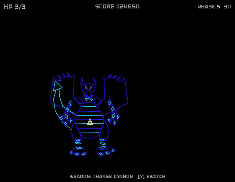

Plasmadrache
Plasmadrache is the boss of Occültacresburg, a winged dragon that spits flames and bites. It is the same character in both of its forms: the stage boss, and Plasmadrache Delta in the boss rush.
Appearance
Plasmadrache is a large dragon drawn as blue and cyan outlines on black, with magenta eyes and a horned head. It has two big spiked wings, a cyan striped belly, and a long cyan tail ending in an arrow-shaped tip. Glowing diamond-shaped crystals sit around its wings, and rings of light mark its claws and feet.
Boss fight: normal form
In Occültacresburg, Plasmadrache is dark blue, which means charged hits only. His striped belly is armour: hit his head, arms, wings, legs or feet. Those parts hurt to touch, but the belly is safe to stand on. HP: 30.
- Walls: a blinking outline appears, then a wall stays for 2 seconds. Charged shots and the dash go through the purple ones.
- Fireballs: 20 in a row. Dodge them.
- Mouth: hit him up close while his mouth is open and he eats you.
Boss fight: Delta form (Plasmadrache Delta)
Plasmadrache Delta is the final fight of the boss rush, in Outer Space, stage 2. He is the same character as the stage boss, with two phases.
- The dragon (150 HP) chases you slowly and spits a fireball every 2 seconds. Only the fireballs hurt. Hit his torso or neck.
- The head (50 HP) is faster. Only its cyan chin takes damage, and only half: bullet 0, pellet 1, charged 2, supercharge 5. Touch the head and it eats you.
Tip: in phase 2, keep your distance and aim at the chin.

